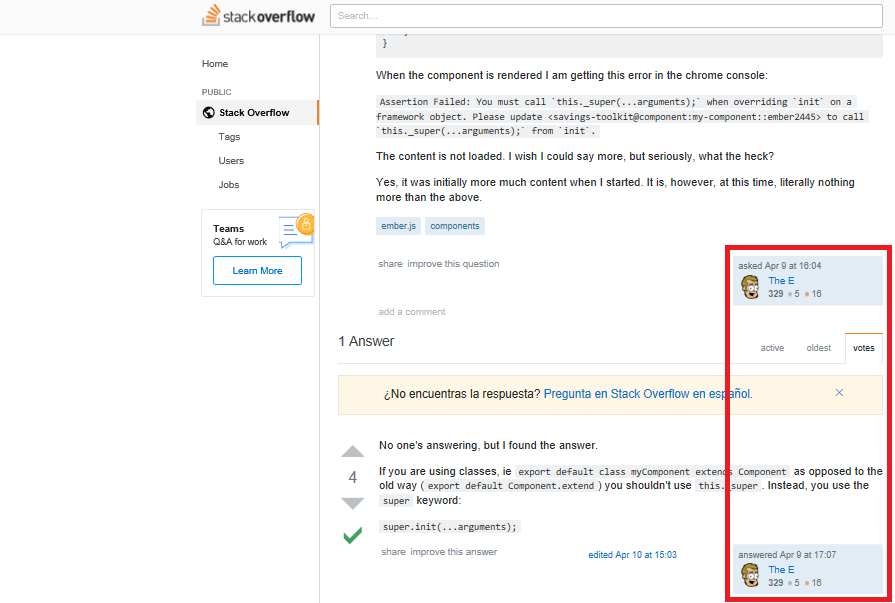

Desarrollo de Aplicaciones Web
Yvone Sánchez Reyes
Presentación Proyecto Final
06/05/2019
Paper Scissors Rock Lizard Spock
by
Fabián Moreno Islas
A01273925
Arturo Pérez Sirvent
A01273864
Dinámica del juego

Templates
Unirse con código
Partidas
Scores
Features
- Log in
- Inicio con código
- Tabla de Score
- Ember-Poll
Retos
Durante la realización del proyecto surgieron algunos contratiempos que fueron resueltos gracias al trabajo en equipo, consultas con Yvone y acudiendo a la documentación.
Algunos de estos contratiempos fueron:
Aprendizaje obtenido
Solucionar errores en el código fue difícil. Esto requirió de ingenio y pruebas continuas.

Experiencias
Hubo partes del proyecto que creíamos tardarían más en completarse y salían rápido, sin embargo, cosas más simples podían generar mayor conflicto.
Conclusiones
"En este proyecto aprendí a usar lo básico de ember y a consumir una API, tambien aprendí como añadir paquetes o librerias aún proyecto en ember. Me di cuenta de las nuevas caracteristicas de ember octane, dónde esta versión la hacen un poco más fácil de manejar que las interiores y con nuevas funciones. En lo personal, ember es un framework muy bueno pero demasiado complejo. La nueva versión esta increible, pero tiene errores donde no puedes buscarlos en internet y dónde no hay suficiente documentación."
-Fabián
Conclusiones
"Realizar un proyecto de este tipo, como un juego, nos ayudó a investigar más para poder brindar una mejor experiencia para el usuario, sin hacerlo muy complejo. Enfentamos retos anteriormente descritos y con ello generamos nuevo conocimiento. Nuestra habilidad incrementó para poder sacar adelante el proyecto con todas las funcionalidades e incluso más de las requeridas."
-Arturo